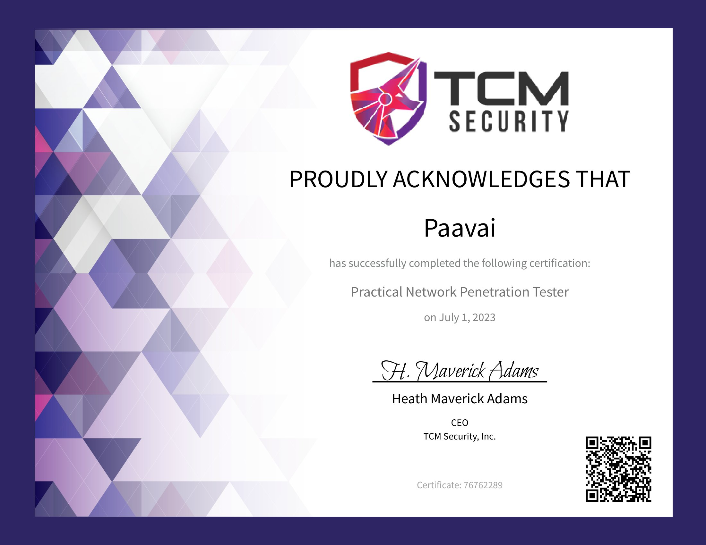
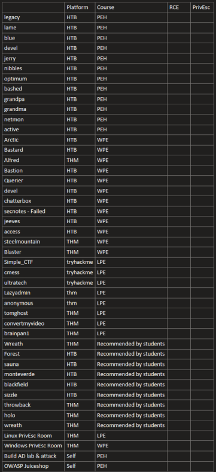
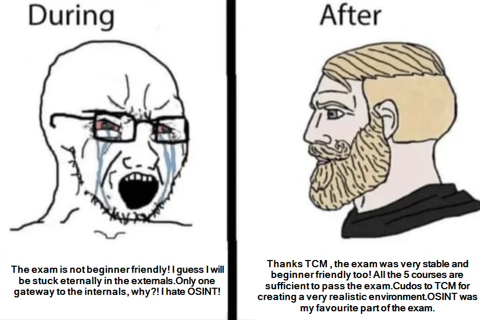

1. Introduction:
First of all, I'm happy that I got PNPT certified! I planned to write a detailed review and also share my journey here in this blog.
2. Overview of the exam:
The exam period is five (5) days, followed by two (2) days to write the professional report. The exam consists of the following phases:
OSINT: Perform Open-Source Intelligence (OSINT) to gather intel on how to properly attack the external/internal network.
External Network: Compromise the external target and find your way into the internal network.
Internal Network: Conduct internal pentest and compromise the domain controller.
Internal Network: Provide a detailed, professionally written report.
Internal Network: Perform a live 15-minute report debrief in front of our assessors, comprised of all senior penetration testers.
The 5 courses required to pass the exam are: (If you are a beginner with no professional experience, some additional practice might be very useful as you can practice whatever you learnt in the courses)
Practical Ethical Hacking (PEH)
Linux Privilege Escalation for Beginners (LPE)
Windows Privilege Escalation for Beginners (WPE)
Open Source Intelligence Fundamentals (OSINT)
External Pentest Playbook (EPP)
2. How I prepared for the exam:
I completed all 5 courses and also Mayorsec's Movement, Pivoting and Persistence course. The order in which I studied was:
Windows Privilege Escalation (WPE) --> Lindows Privilege Escalation (LPE) --> Practical Ethical Hacking (PEH) --> OSINT (Open Source Intelligence) --> Movements, Pivoting and Persistence (MPP) --> External Pentest Playbook (EPP)
I straight-in jumped into Windows Privilege Escalation(WPE) course since I passed eJPTv1 very recently that time and hence I wanted to learn privilege escalation first. I see that a lot of people tell you that you can skip the privilege escalation courses. But in contrast, I highly recommend completing the privilege escalation courses, you not only learn privilege escalation but also get introduced to various methods to a gain foothold. In addition to this, the privilege escalation courses will also get you familiar with Linux and Windows environments and this will greatly help you when you do the Active Directory labs as well. Apart from this you also can complete the capstone boxes of the PEH (Practical Ethical Hacking) course only if you finish the privilege escalation courses. The order in which you can take the courses will highly depend upon your current knowledge level. In addition to all these courses I also completed the following list of boxes: (⚠️Most of the boxes you will solve while doing the courses itself, the rest of the boxes are suggested by other students and they are great practice⚠️)

3. Additional Resources:
⚠️Apart from the 5 courses, I would highly suggest also going through all of the following and solving the 4 capstone boxes:⚠️
(i) Additional Pivoting lessons:
The training course only covered Metasploit's autoroute+portfwd module for pivoting but there are a lot of other tools which we can use for pivoting. I would highly recommend learning few other tools which will be handy in specific situations. Wreath in TryHackMe covers most of the tools, alternatively, you can practice using your own pivoting homelab (which Heath taught during the course to set up) and practice. In case you opted to learn using your own homelab, you can utilize 0xdf's Tunneling and Pivoting blog (Discusses various Pivoting and Tunneling tools in detail) and Pentest blog (discusses the basic concept of pivoting, routing, port forwarding, etc) as reference.
Sources to learn from: Wreath(TryHackMe), Pivoting Homelab(In the course, its already taught how to set up this lab, you can simply test the other tools using this lab itself)
(ii) Domain Enumeration:
In the active directory labs we did during the course, we already know the domain name and domain usernames. But this is not the case during a pentest. There are a lot of tools and methods out there, so have some tools in your sleeves to find the domain information. LDAP querying is a great method to find domain information, popular tools such as Powerview and Bloodhound utilize it too, there are other tools as well and you can check Hacktricks website for the list of other tools.
Sources to learn from: Wreath and Holo (TryHackMe), Active Directory Homelab (You can test the tools you learnt in the homelab), Blackfield/Sauna/Search (HackTheBox) (You can follow 0xdf HackTheBox writeup or Ippsec's walkthrough of these boxes to learn these tools)
(iii) Post Pivot Enumeration:
In the course, methods such as ARP scanning and Nmap are discussed. Other than these tools, there are several Python/Bash script/Powershell/Perl based network and port scanners tools. We even learn to build a network scanner using python in the PEH course. Try to play with these tools and see which best suits you. I personally learnt the tools while solving Wreath and Holo networks of TryHackMe. You can follow this Wreath(TryHackMe) writeup or Holo(TryHackMe) writeup which I myself referred to while I was solving Holo and Wreath and experiment with the tools in your home pivoting lab as well.
Sources to learn from:Wreath(TryHackMe), Pivoting homelab, Holo(TryHackMe)
(iv) Good Understanding of Integrity Levels and Windows UAC:
This is a standalone topic itself but to put it in simple words each user/process is assigned with an integrity level. The local administrator account (Administrator) is a high integrity level user while other authenticated users even if they are a member of the administrators group is just a medium integrity level user. Having system level access can open more doors. Understanding these concepts will assist you during privilege escalation. This article is a great reference.
(v) Windows Credential storage:
Windows stores credentials in various locations. A basic understanding of these credentials would be sufficient. Understanding this will help you when you use a tool like Mimikatz.
(vi) Tools to dive deep into:
Every tool you learn is worth diving deep into. For example, when I read this crackmapexec blog I learnt the cool ways in which crackmapexec tool could be used. When I was doing Mayorsec's course, I learnt the concept of Windows Integrity levels so don't restrict yourself to the 5 courses, go beyond and learn more by reading blogs (each blog will be very unique and it will totally amaze you how some tools can be used) or by solving labs.
(vii) Other Attacks:
(a) AS-REP roasting - Learning this after going through Kerbroasting would be more simple.
(b) Silver Ticket - Forged service ticket attack.
(c) DCsync attack - Its when the attacker pretends to be another domain controller and retrieves password data via domain replication. HackTheBox's Forest is an amazing box to learn more about this attack.
(d)Print Nightmare attack - Practice this attack using holo (TryHackMe) or some old Windows box in HackTheBox. (It was taught in the course but we were unable to implement it as this attack was patched)
(e) Golden Ticket - The course does cover this attack but you can further explore this portion by trying to generate the ticket in your own Kali machine.
(vii) Capstone Boxes:
The boxes I suggest will be a refresher as you will be implementing the concepts you previously learnt from the course and also will help you chain various concepts you learnt previously. (eg: Windows privilege escalation+ Active Directory attacks). In addition to these, you can learn new tools, concepts and techniques. The capstone boxes are:
(a) TryHackMe (Holo) - You will learn to chain active directory and Windows based attacks, various pivoting and post pivot enumeration tools. Additionally, you will also learn some basic antivirus evasion techniques and holo network with introduce you to what the exam might look like i.e. a combination of internals and externals.
(b) Snaplabs (Conda's Entry Level Pentesting Lab) - If you watch Conda's walkthrough video on youtube, he will give a lot of valuable tips about pentesting and when privilege escalation needs to be done. This is also like Holo (TryHackMe) will introduce you to pivoting techniques, basic AV bypassing and UAC bypassing techniques and how to chain attacks.
(c) HackTheBox (Sauna) - Will be a refresher to some Active Directory attacks(AS-REP roasting, Kerbroasting and DCsync attack) and OSINT.
(d) TryHackMe (Wreath) - Pivoting Source and Report writing capstone - You can utilize wreath to learn pivoting and post pivoting enumeration tools (Covers most of the tools) and to practice report writing, doing the report for the first time in the exam can be a pain so just practice report writing using wreath. There are a lot sample reports available for Wreath whcih you utilize as a reference.
⚠️Another tip would be to do Wreath first, as it will help you understand pivoting well and then do the rest of the boxes (You can also do Sauna before Wreath as it won't require pivoting)⚠️
4. Pre-Exam Preparation and Tips:
This is the very crucial and most important part of your preparation. Following would be my tips:
(i) Revision:
Revise whatever you have learnt. Of course it is not possible to revise everything you learnt so focus on Active Directory, OSINT and reporting portions especially. You can also learn the defensive measures for every Active Directory attack which will help you greatly during report writing.
(ii)Have a Plan:
(a) Active Directory
For the Active Directory portion, I planned to first divide the attacks into 2 that is attacks that can be done with domain credentials and without domain credentials. This will help you to understand when to do what. There are several crazy mindmaps out there which can be helpful as well but making one yourself will help greatly, you don't need to make any crazy large mind map, splitting the Active Directory attacks into 2 itself can help you. Also decide the list of domain enumeration tools you will be using, using multiple tools can give you different results as well.
(b) OSINT
OSINT is actually simple. Just determine what is your goal or what you need to find. Heath talks about password guessing methodology during the course so make sure you have it in your notes as well and you can also make your own wordlist using it will save a lot of time! Another main thing is the choice of tool, decide the tools you will be using.
(c) Privilege Escalation
I simply had a list of some simple Linux and Windows privilege escalation techniques. I also went through the PEH capstone boxes again since it has been a while since I did them.
(c) Pivoting
By completing Wreath/Holo or maybe testing the various tools in your own pivoting homelab, you would have learnt a lot of pivoting tools and post pivot enumeration techniques. Decide which you are comfortable with most and also learn when to use which.
(e) Quick Commmands
Prepare quick commands for each port, so you don't need to waste your time searching for it. Using multiple tools for a particular port can gather different information.
(f) Pentesting Mindset
Let's assume your friend gives his computer to hack, obviously instead of trying some crazy attack, you will be very curious to search for crazy photos, will check the games he installed and will check his browsing history, chats, etc. This is the pentesting mindset, the goal of pentesting is just not to compromise the machine but to find as much information and all vulnerabilities as possible. Reading TCM's sample report can also give you an idea about what real-time pentesting will look like.
(g) ⚠️Don't blindly enumerate!⚠️
Blindly enumerating anything can lead you to nothing. Of course at times you might find something very valuable (for example in a website maybe) but most likely will lead you to nothing. Have a plan/goal while you enumerate a particular port or search for something, understand why you are doing it and what the outcomes might be, this will be my greatest tip of all.
5. The Exam Day:
I guess this meme will be very much relatable for everyone who took the exam😉:
I simply sat for the exam once I prepared my mind by solving some boxes like forest, sauna, blackfield and search (in HTB) just a few days before the exam. I watched Conda's entry level pentest lab walkthrough video as well which greatly helped me to understand the chaining of attacks. In addition to all this, I prepared some quick notes which contained some basic enumeration commands for each port, a list that contained Active Directory attacks with and without domain credentials separately and some basic/common privilege escalation methods, post pivot enumeration techniques and some pivoting commands.
It took me almost full 5 days to complete the exam (I had around 11 hours left). I was stuck at multiple points in the exam but I was able to overcome it and successfully complete the exam. My pre-exam notes helped me a lot during the exam. I not only learnt a lot while preparing for the exam but also learnt a lot during the exam. As I already practiced report writing using Wreath, I was able to prepare my report very easily and completed my debrief later.
6. Conclusion:
It would be great if the training course added some more Active Directory attacks and information on other pivoting tools. The exam was my first pentesting experience and I tried to treat it more like a real-time pentest rather than an exam and tried to find every vulnerability I could. If the exam included aspects from each of the 5 courses, it would have been more holistic. Most of all the exam was very stable, I would occasionally leave to eat or take short breaks and when I returned back everything would be as I left. TCM's discord group is amazing, the staffs are always there to help when you are stuck at some part of the course. Overall, I learnt a lot in my PNPT journey. Just by completing all 5 courses itself, I acquired a lot of knowledge. This is not the end for me there are miles to go so I will learning more and more.